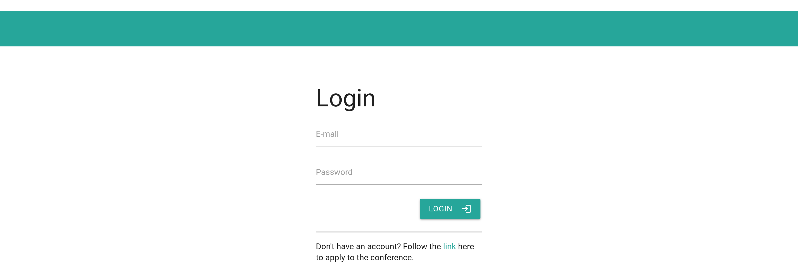
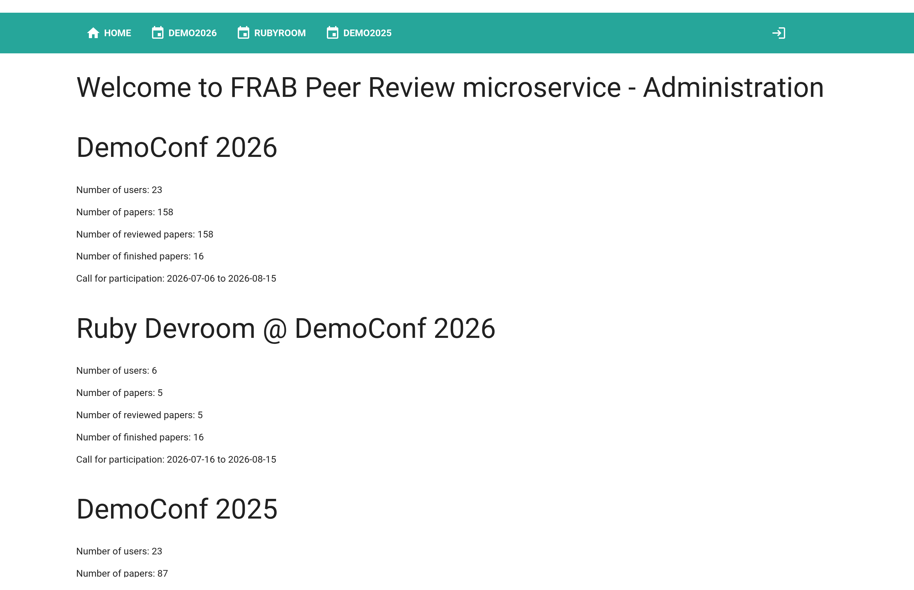
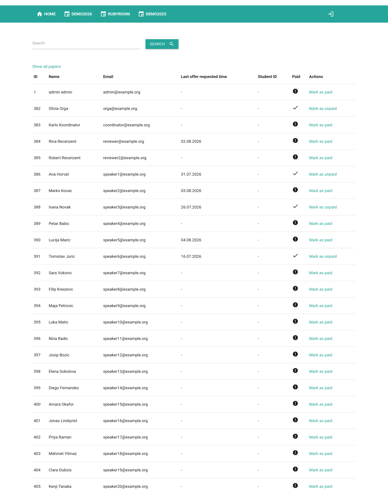
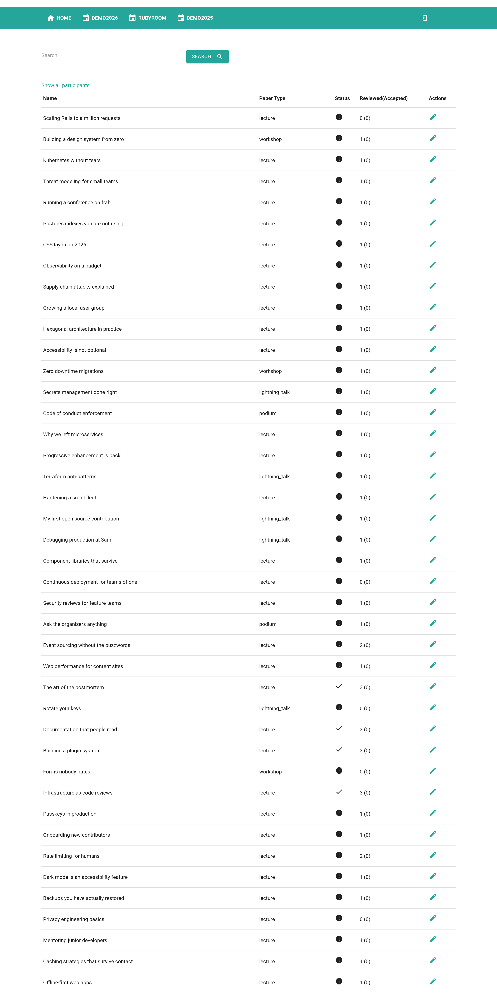
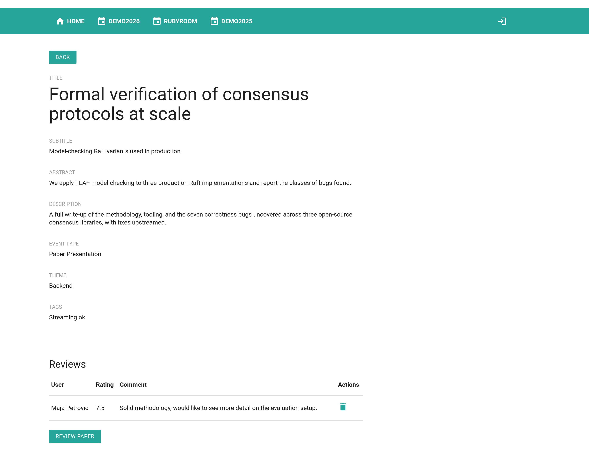
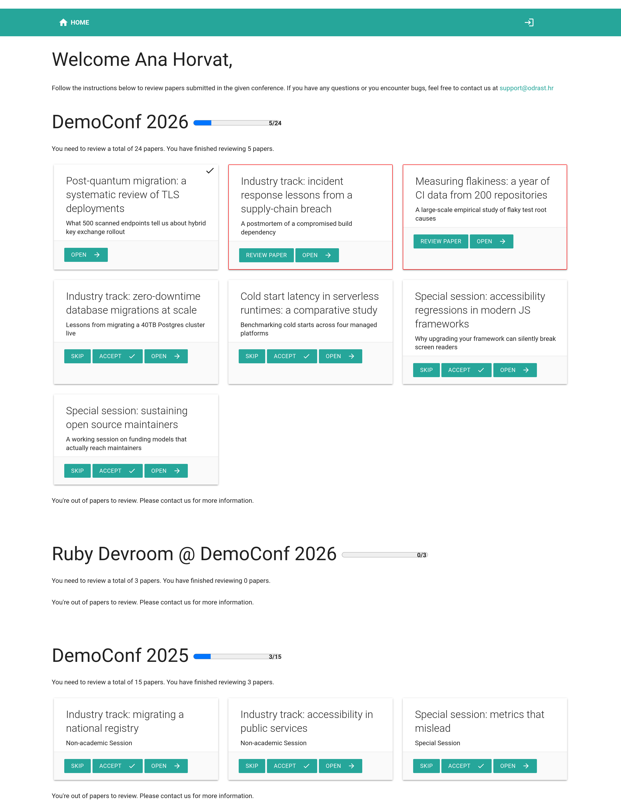
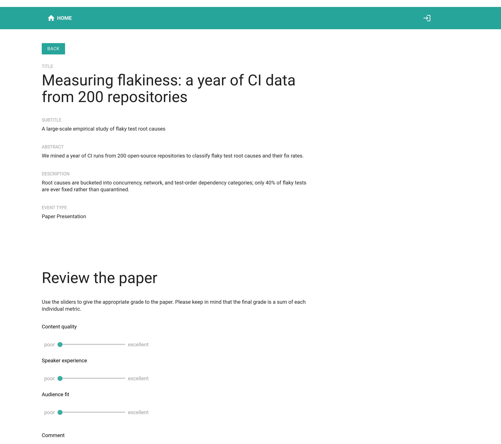
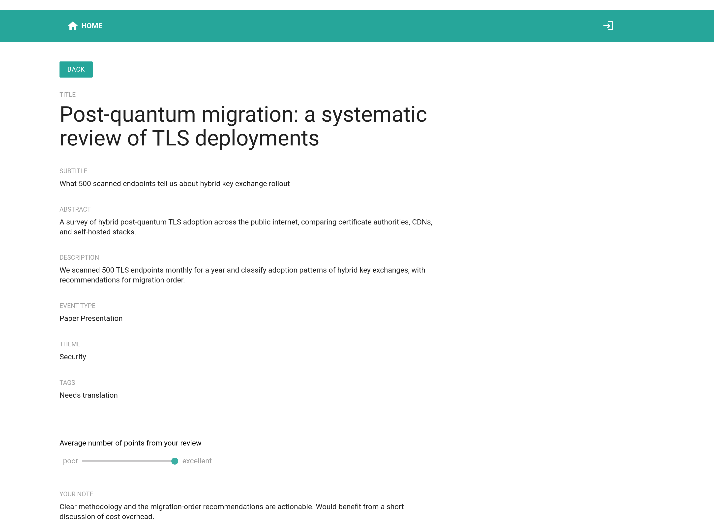
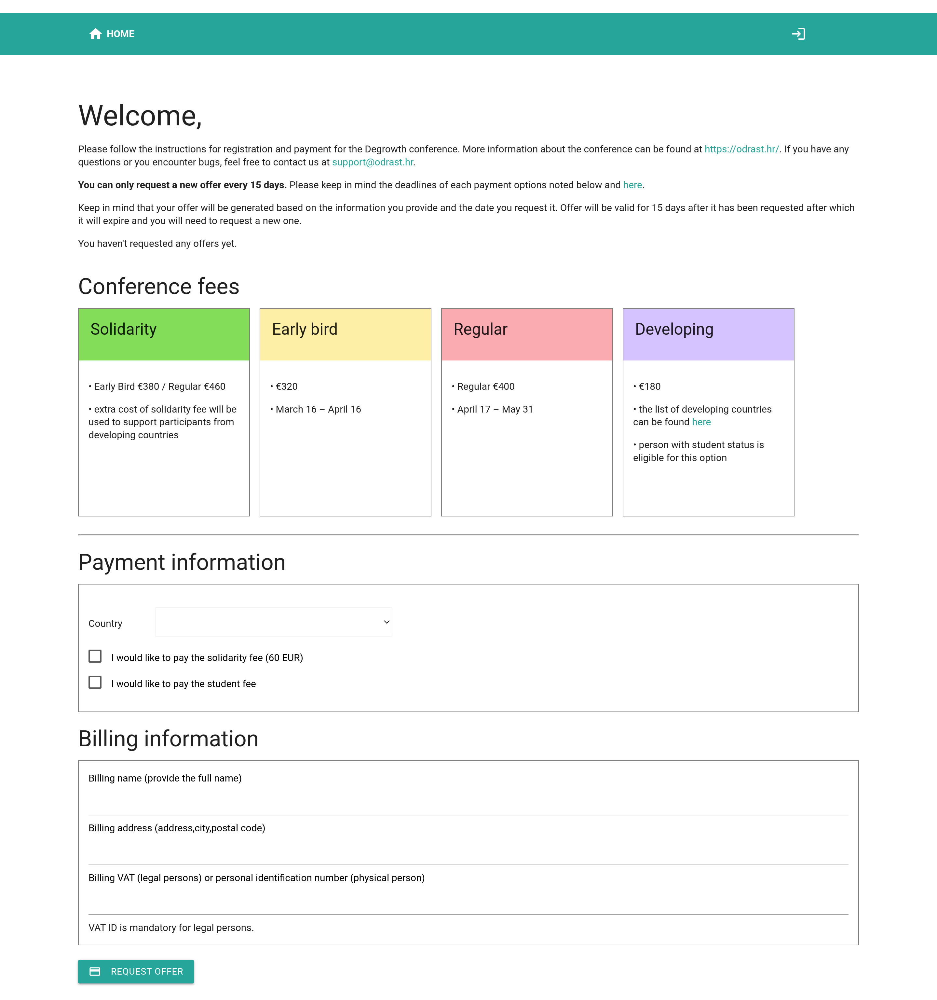

Peer review & solidarity-fee payments for a frab conference - a short guide for admin/crew and for speakers
Written against the demo data (demo2026) seeded alongside frab's own rails demo:seed. Demo password for every account below: test123.
frab-ms is a small companion app that sits next to frab and adds two things it doesn't have out of the box: peer review of papers by other speakers, and collection of the solidarity fee / conference payment. It reads people, events and conferences straight out of frab's database - there's nothing to import.
Everyone signs in at the same /users/sign_in page. What they see afterwards depends entirely on their role:

| Role | Sees |
|---|---|
admin, or crew with an orga conference role | Every conference's stats, the full participant list, and every paper - plus moderation actions (delete a review, mark someone paid). |
| submitter (a speaker), or plain crew | Only their own submitted papers, a queue of other people's papers assigned to them to review, and their own payment page. |
Everything, across every conference.
Signing in as an admin (or a crew member marked orga on a conference) lands on a dashboard listing every conference the app knows about, with a running count of submitted, reviewed and fully-reviewed papers, and the CfP window.

From a conference's Show all participants link, admin/crew get every registered person, their last payment-offer request, and a paid/unpaid toggle they can flip directly.

The conference's paper list shows every submission, its type, whether it's finished (three peer reviews in), and how many reviews/acceptances it has so far. A search box and an academic/practical filter (?prikaz=academic|practical) narrow it down.

Paper Presentation, Special Session or Non-academic Session ever enter the peer-review flow - the rest (regular talks, workshops, lightning talks) are frab content that this app doesn't review.Opening a paper shows its full submission content plus, for admin/crew only, every review it has received so far with the option to delete one (the bin icon) if it needs to be redone. Admin/crew can also file their own review from here.

Your own papers, your own reviews, your own payment.
A speaker who has submitted at least one paper sees a progress bar per conference (reviews done / reviews required, three per paper they submitted) and a stack of cards - other people's papers assigned to them to review. Each card can be skipped, accepted (claim it, review it later), or opened straight away.

Papers are recommended by matching the reviewer's own submission's classifiers first, then filling the rest of the quota from whatever else is open - so nobody runs out of things to review just because their own paper happens to be a niche topic.
Opening a paper to review shows its full content, then a slider per review metric the conference has configured (here: content quality, speaker experience, audience fit) plus a free-text comment. The final rating is the average of the sliders.

Once submitted, the paper's own page shows the reviewer their own score and note back - useful for double-checking what was sent before moving to the next paper in the queue.

Every signed-in account - speaker or crew - has its own payment page: pick a country, optionally add the solidarity fee or student rate, fill in billing details, and request an offer by email. An offer can only be requested again after 15 days, so the button hides itself while a request is still fresh.

app/views/payment/_form_fields_left.html.erb before reusing this app for a different event.